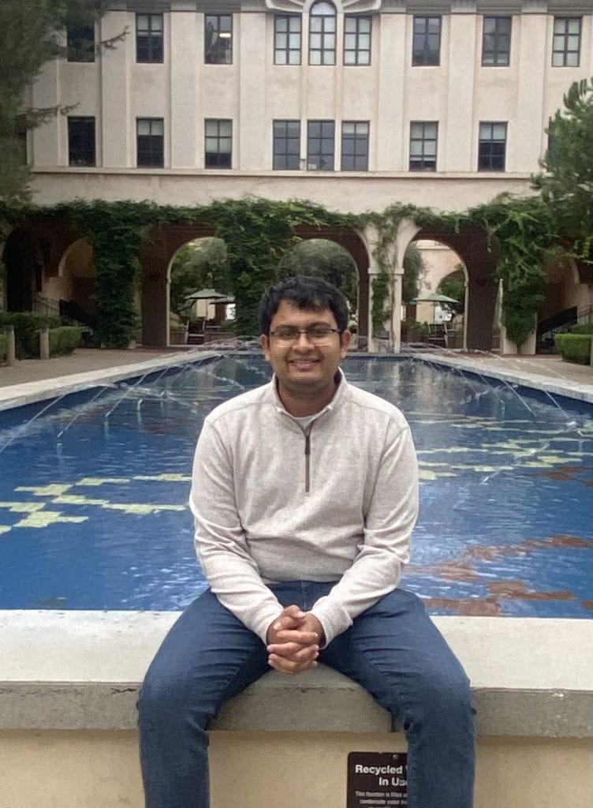

|  | I am currently a second year CS PhD student at University of Southern California in the CS Theory Group and ODDS Group where I am advised by Meisam Razaviyayn and Vatsal Sharan. I am broadly interested in working on fundamental problems in Optimization and Differential Privacy. Before joining USC, I recieved a B.Tech in Computer Science and Artificial Intelligence from IIIT Delhi. |
Inherent Privacy of Zeroth-Order Projected Gradient Descent
Devansh Gupta, Meisam Razaviyayn, Vatsal Sharan
AISTATS 2025
OPT 2024 at NeurIPS (Oral)
A Stochastic Optimization Framework for Private and Fair Learning From Decentralized Data
Devansh Gupta, A.S. Poornash, Andrew Lowy, Meisam Razaviyayn
Under submission
PPAI 2025 at AAAI
Stochastic Differentially Private and Fair Learning
Andrew Lowy, Devansh Gupta, Meisam Razaviyayn
ICLR 2023
TPDP 2023; AFCP 2022 at NeurIPS (Oral)